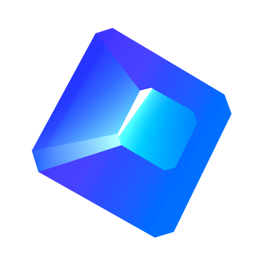

A profile is a person or a role, with its own sign-ins. Give each space one. Send a profile through your VPN — the rest go direct.
Any site can always open as the profile it needs: right-click a tab → Always Open … As.

Spaces. Previews. Split view. No ads.
Work or personal. VPN or direct. Per site.
Safari's engine. Chrome's extensions. Free.
Didn't start? Download again

A profile is a person or a role, with its own sign-ins. Give each space one. Send a profile through your VPN — the rest go direct.
Any site can always open as the profile it needs: right-click a tab → Always Open … As.


⌘T for tabs, history and actions. “!yt cats” searches YouTube right away.

⌥⌘R — just the article. ⌥⌘T — translated on your Mac, nothing sent anywhere.
Two, three or four pages side by side — and they stay together.
Temporary tabs tidy themselves away. ⇧⌘A brings them back.
Links from other apps open small. Keep it as a tab, or let it go.
Video keeps playing in the sidebar. One click to Picture in Picture.
From the Chrome Web Store and Firefox Add-ons.
Summarize ⌥⌘U, capture images ⇧⌘2, tidy titles. Only what you turn on.
Uses the WebKit already in macOS. Helium takes 343 MB, Brave 878 MB.
An empty tab doesn't start a web process. Safari: 199 MB.
Nothing goes out in the first 90 seconds. Safari reaches 2 servers.
Same engine, less on top: Safari layers its own features over every page. Speedometer 3: 45.3 against 40.6.
| Sapfire | Arc | Dia | Zen | Orion | Safari | |
|---|---|---|---|---|---|---|
| Engine | WebKit | Chromium | Chromium | Firefox | WebKit | WebKit |
| Spaces with vertical tabs | — | — | — | |||
| Ads blocked out of the box | YouTube too | — | — | — | — | |
| Chrome extensions | — | some | — | |||
| Open source | — | — | — | — | ||
| Price | Free | Free | Free · Pro $20/mo | Free | Free · Orion+ $5/mo | Free |
Arc stops getting updates on 22 December 2026 — Sapfire imports it in one step. As of November 2026, from each browser's own site and release notes. Numbers: Sapfire 1.0 and Safari 27 on a MacBook Pro M3 Max, macOS 27, idle Mac, clean profile, 9 November 2026; Speedometer 3 served locally.
Ads and trackers blocked out of the box — YouTube too. No extension needed.
Sapfire never talks to a server of its own.
Goes only through your proxy, writes nothing to disk, locks with Touch ID.
Encrypted on your Mac, unlocked with Touch ID.
Privacy policy · This site doesn't track you either.
Sapfire is GPL-3.0 on GitHub. Read the code, report a bug, send a fix.
Import in one step: spaces, pinned tabs, folders, splits, history and passwords. Right on the first screen, or File → Import from Arc…
WebKit is the engine Safari uses, and it's already on your Mac. Sapfire doesn't ship a second Chromium — that's why it is small, light on memory and kind to your battery.
Most do. Sapfire installs them from the Chrome Web Store and Firefox Add-ons; a few use features Safari's engine doesn't have. Requires macOS 15.4 or later.
Yes — signed with a Developer ID and notarized by Apple, so macOS opens it without warnings. And the code is open: read every line.
Not yet.
Mac only, for now.